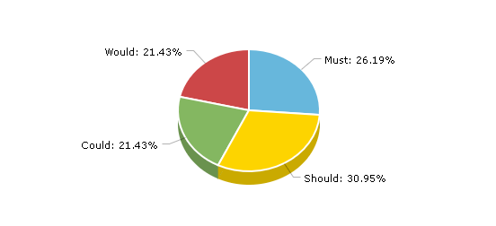

MosCoW
Histórico de versão
| Data | Versão | Modificação | Autor |
|---|---|---|---|
| 14/02/2022 | 0.1 | Criação do documento e elaboração do texto | Eduardo Maia |
| 16/02/2022 | 0.2 | Inserção dos requisitos e sua classificação | Eduardo Maia |
| 19/02/2022 | 0.3 | Revisão do documento | Lorenzo Santos |
| 19/02/2022 | 0.4 | Correção de Links | Eduardo Maia |
Metodologia
MoSCoW é um método que tem o intuito de encontrar um entendimento em comum entre as partes interessadas no projeto sobre a importância que elas atribuem a cada requisito. Essa técnica está ligada às metodologias ágeis e define a prioridade dos requisitos de um sistema ou projeto. O nome dessa técnica é dada devido as classificações de prioridade possíveis:
- Must: tarefas que vão agregar valor ao produto final e são indispensáveis;
- Should: os requisitos que recebem essa prioridade são aqueles que são importantes mas não são vitais para o sistema;
- Could: são requisitos que seriam desejáveis, porém não são estrategicamente essenciais;
- Would/Want/Won't : requisitos menos críticos que possuem menor retorno sobre o investimento quando comparado a outros.
Resultados
Proporções entre as classificações
| Prioridade | Quantidade de Requisitos |
|---|---|
| Must | 11 |
| Should | 13 |
| Could | 9 |
| Would | 9 |

Figura 01 - Gráfico de pizza representando as proporções de requisitos classificados como Must, Should, Could e Would
Lista de requisitos e suas prioridades
| Identificação | Requisito | Técnica | Prioridade |
|---|---|---|---|
| RF01 | O usuário deve ser capaz de registrar o ponto de entrada | Brainstorming | Must |
| RF02 | O usuário deve ser capaz de registrar o ponto de saída | Brainstorming | Must |
| RF03 | O usuário deve ser capaz de registrar o ponto de saída para o almoço | Brainstorming | Must |
| RF04 | O usuário deve ser capaz de guardar informações do horário de trabalho para cada dia da semana | Brainstorming | Must |
| RF05 | O usuário deve ser capaz de apagar registros passados | Brainstorming | Should |
| RF06 | O usuário deve ser capaz de copiar registros passados | Brainstorming | Could |
| RF07 | O usuário deve poder inserir o saldo de horas já existente | Brainstorming | Should |
| RF08 | O usuário deve registrar o ponto de retorno do almoço | Brainstorming | Must |
| RF09 | O usuário deve ser capaz de configurar os horários de entrada e saída do dia de acordo com registros do mesmo dia | Brainstorming | Could |
| RF10 | O usuário deve ser capaz de configurar o horário e o dia do backup | Brainstorming | Would |
| RF11 | O usuário deve ser capaz alterar as opções de intervalo, como por exemplo definir um horário de intervalo mínimo | Brainstorming | Could |
| RF12 | O aplicativo deve ser capaz de identificar inconsistências no registro de ponto, como por exemplo a ausência de registro no dia | Brainstorming | Should |
| RF13 | O usuário deve ser capaz de registrar o ponto eletrônico através de uma Tag NFC | Brainstorming | Would |
| RF14 | O aplicativo deve ser capaz de armazenar a tolerância da jornada de trabalho | Brainstorming | Should |
| RF15 | O usuário deve ser capaz de zerar o saldo de horas total | Brainstorming | Should |
| RF16 | O usuário deve ser capaz de visualizar seu banco de horas no período desejado no formato de gráfico de linhas | Brainstorming | Could |
| RNF01 | O aplicativo deve ter opções de linguagem (português e inglês) | Brainstorming | Would |
| RNF02 | O Sistema deverá ser acessível por meio de dispositivos móveis | Brainstorming | Must |
| RNF03 | O aplicativo deve ter opções de tema (claro e escuro) | Brainstorming | Would |
| RNF04 | O aplicativo deve garantir a segurança dos dados do usuário | Questionário | Must |
| RNF05 | O Sistema deve ter layout compreensível e objetivo | Questionário | Could |
| RNF06 | O aplicativo deve possuir interface acessível e intuitiva | Questionário | Could |
| RF17 | O usuário deve ser capaz de registrar falta | Introspecção | Should |
| RF18 | O usuário pode adicionar uma foto do registro do ponto | Introspecção | Should |
| RF19 | O usuário deve ser capaz de configurar as notificações que o aplicativo informa (aviso de horário de entrada, saída, intervalo) | Introspecção | Would |
| RF20 | O usuário pode optar por idiomas (português e inglês) | Introspecção | Would |
| RF21 | O usuário deve ser capaz de visualizar seus registro no dia, na semana e no mês | Introspecção | Must |
| RNF07 | O aplicativo deve ser capaz de armazenar o backup em contas do Google Drive e Dropbox | Introspecção | Could |
| RF22 | O usuário deve ser capaz de configurar a qualidade e resolução da foto armazenada | Introspecção | Would |
| RNF08 | O aplicativo deve ser capaz de calcular o saldo de horas com base no registro do ponto e tolerância | Introspecção | Must |
| RF23 | O usuário pode ser capaz de apagar todos os registros | Observação | Must |
| RF24 | O usuário deve ser capaz de ativar a notificação de alarme | Observação | Could |
| RF25 | O usuário deve ser capaz de filtrar os parâmetros do gráfico de linhas (primeiro ponto, ponto de saída, saldo total, saldo do dia) | Observação | Would |
| RF26 | O usuário deve ser capaz de registrar folga | Observação | Should |
| RF27 | O Usuário deve ser capaz de consultar o saldo de horas do dia | Observação | Should |
| RF28 | O usuário deve ser capaz de fazer um backup dos seus registros automaticamente em nuvem ou local | Observação | Could |
| RF29 | O usuário deve ser capaz de editar registro passados | Observação | Should |
| RF30 | O usuário deve ser capaz de registrar férias | Observação | Should |
| RF31 | O usuário deve ser capaz de escrever uma descrição para cada registro | Observação | Would |
| RF32 | O Usuário deve ser capaz de gerar um extrato dos seus registros de acordo com os parâmetros que ele quiser | Observação | Should |
| RF33 | O Usuário deve ser capaz de consultar o saldo de horas total (do mês) | Observação | Must |
| RF34 | O usuário deve ser capaz de registrar hora extra | Observação | Should |
Referências
[1] - Método MosCoW. Voitto - BR, 01 ago. 2021. Disponível em https://www.voitto.com.br/blog/artigo/metodo-moscow. Acesso em 14 de fev. 2022